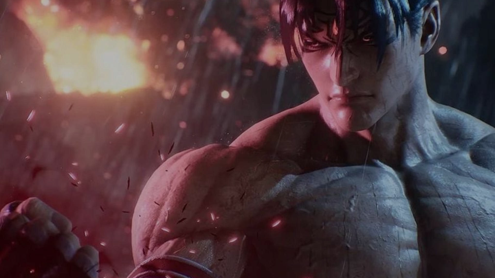
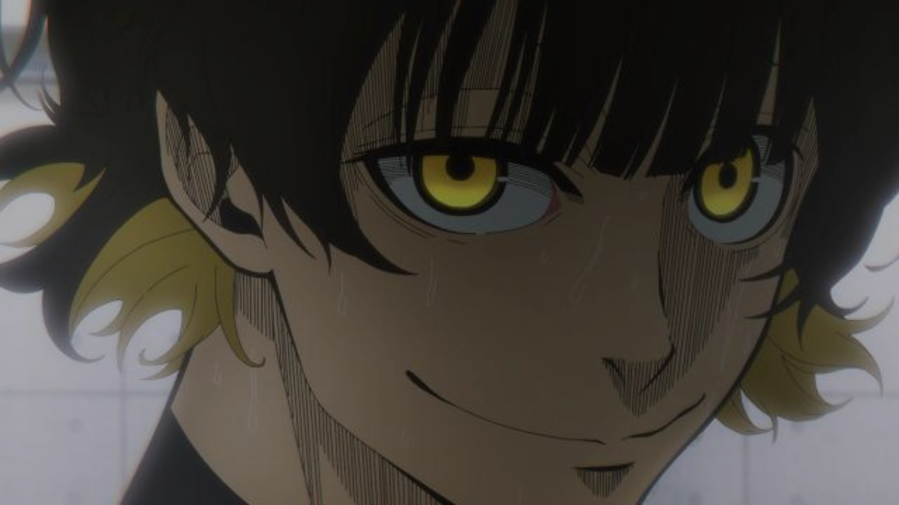
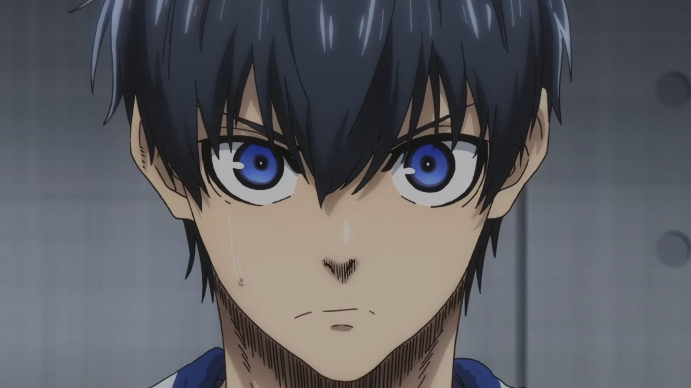
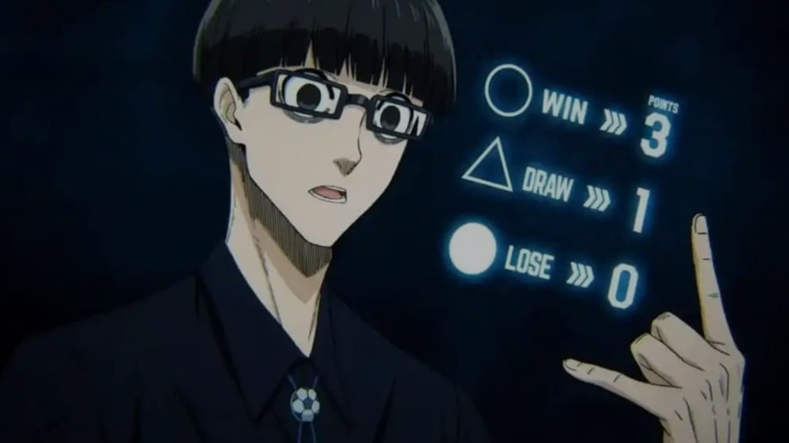
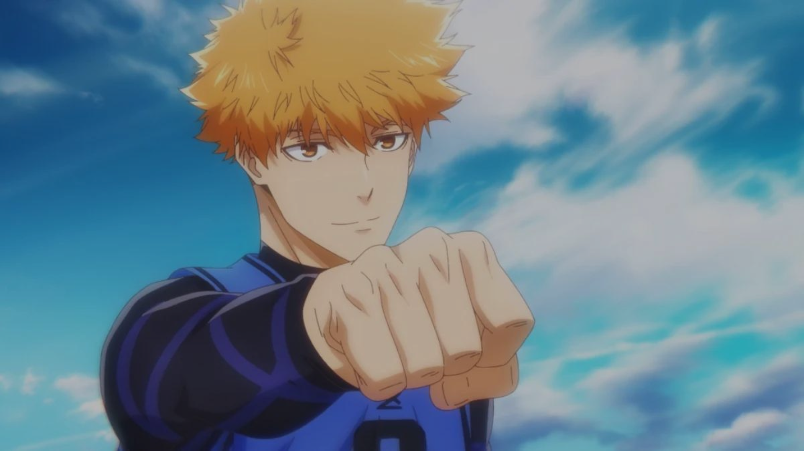
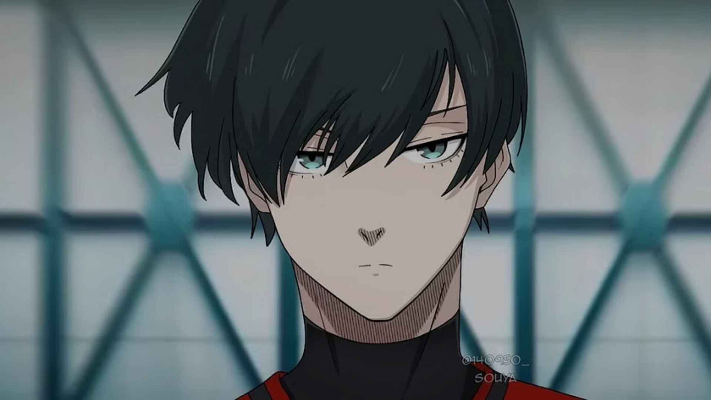
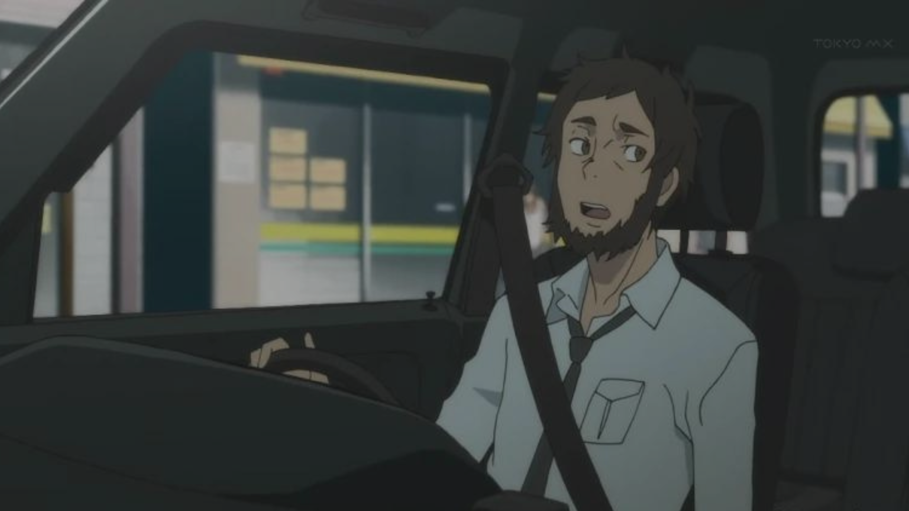
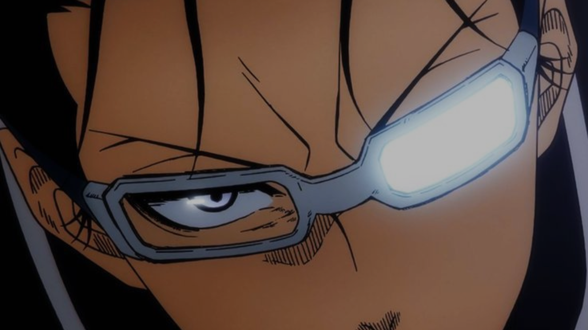
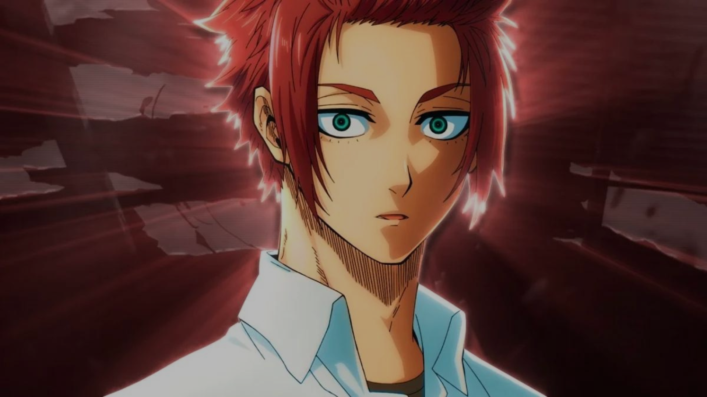

Jin
Jin é um jogador talentoso em "Blue Lock". Sua notável habilidade e determinação o destacam como um atleta formidável no programa de treinamento. Conhecido por sua destreza em campo e astúcia estratégica, Jin enfrenta desafios com coragem e habilidade incomparáveis. Acompanhe sua jornada emocionante enquanto ele busca se destacar no mundo do futebol.








